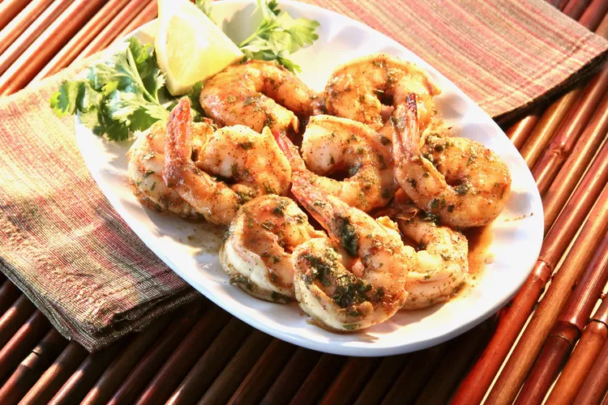

Spicy baked shrimps

Description
These spicy baked shrimp are made with a perfect blend of spices!
So easy and quick to make!
Ingredients
- ½ cup olive oil
- 2 tablespoons Cajun seasoning
- 2 tablespoons lemon juice
- 2 tablespoons chopped fresh parsley
- 1 tablespoon honey
- 1 tablespoon soy sauce
- 1 pinch cayenne pepper
- 1 pound uncooked shrimp, peeled and deveined
- cooking spray
Steps
- Whisk olive oil, Cajun seasoning, lemon juice, parsley, honey, soy sauce,
and cayenne pepper together in a large glass or ceramic bowl.
Add shrimp and toss to evenly coat.Cover the bowl with plastic wrap
and marinate in the refrigerator for 1 hour.
- Preheat the oven to 450 degrees F (230 degrees C).
Spray a baking dish with cooking spray.
- Transfer shrimp into the prepared baking dish and pour any remaining marinade over top.
- Bake in the preheated oven until shrimp are bright pink on the outside and
the meat is opaque, about 10 minutes.